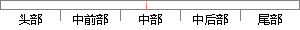

区别的是redis会周期性的把更新的数据写入磁盘或者把修改操作写入追加的记录文件，并且在此基础上实现了master-slave(主从)同步。
片段位置图

相似结果|
相似片段 1：效率，数据都是缓存在内存中。区别的是Redis会周期性的把更新的数据写入磁盘或者把修改操作写入追加的记录文件，并且在此基础上实现了maSter-slave(主从)同步[12]。Redis是一个高性能
相似片段 2：一样，为了保证效率，数据都是缓存在内存中。区别的是Redis会周期性的把更新的数据写入磁盘或者把修改操作写入追加的记录文件，并且在此基础上实现master．slave(主从)同步。Redis是一个高性能
相似片段 3：都是缓存在内存中。区别的是redis会周期性的把更新的数据写入磁盘或者把修改操作写入追加的记录文件，并且在此基础上实现了master-slave(SE从)同步【4引。Redis是一个高性能
相似片段 4：别的是redis支持周期性的把更新的数据写入磁盘或者把修改操作写入追加的记录文件，并且在此基础上实现了master-slave(主从)同步。3．1．3三种内存数据库的性能测试在本次试验中
相似片段 5：。与Mermached一样，为了保证效率，数据都是缓存在内存中。区别的是redis会周期性的把更新的数据写入磁盘或者把修改操作写入追加的记录文件，并且在此基础上实现了rr】a!ster-slave(主从)同步。
相似片段 6：是redis会周期性的把更新的数据写入磁盘或者把修改操作写入追加的记录文件，并且在此基础上实现了master-slave(主从)同步。Redis是一个高性能的key-value数据库。redis的出现，很大
相似片段 7：，redis支持各种不同方式的排序。与 memcached一样，为了保证效率，数据都是缓存在内存中。区别的是 redis会周期性的把更新的数据写入磁盘或者把修改操作写入追加的记录文件，并且在此基础上实现
相似片段 8：集及更丰富的操作，而且这些操作都是原子性的。同时为了保证效率，Redis 将数据将缓存在内存中， 周期性的把更新的数据写入磁盘或者把修改操作写入追加的记录文件，并且在此基础上实现了主从同步。Redis
|
※ 片段修改建议 ※
近似词参考：- 区别：区分
- 别的：此外 另外 其它 其余
- 或者：或 大概
- 修改：点窜
- 操作：操纵
- 记录：记实 纪录 记载
系统自动生成语句：区分的是redis会周期性的把更新的数据写入磁盘或把点窜操纵写入追加的记实文件，并且在此基础上实现了master-slave(主从)同步。
注：本片段修改建议为系统自动生成，仅供参考。